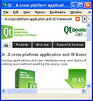

Qt WebKit Widgets Examples

Qt provides an integrated Web browser component based on WebKit, the popular open source browser engine.
These examples and demonstrations show a range of different uses for WebKit, from displaying Web pages within a Qt user interface to an implementation of a basic function Web browser.
Demonstrates how to traverse the DOM tree | |
Demonstrates how to use browse web and manipulate content | |
Demonstrates how to read form data using JavaScript | |
Demonstrates how to preview HTML data | |
Demonstrates how to present XML-like data structure in the web view | |
Demonstrates how to identify HTML elements in a web page | |
Demonstrates a complete web browsing experience | |
Demonstrates how to integrate web functionality with other core functionality. | |
Demonstrates how to capture frame in the web page | |
Demonstrates how scrolling is handled in Qt. |